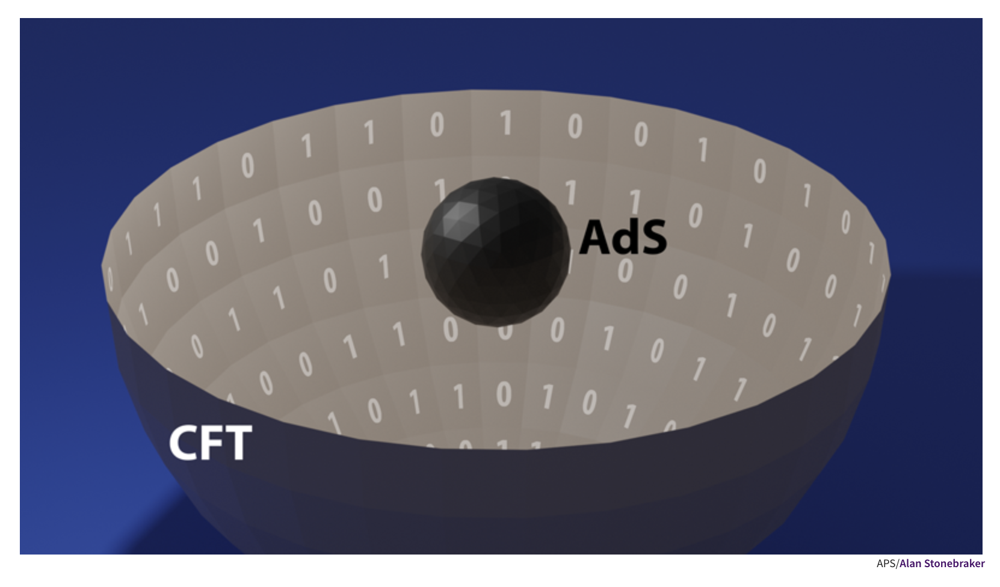

Investigador postdoctoral del Instituto de Ciencia y Tecnología de Gwangju
¿QUIÉN ES
HUGO CAMARGO?
¡Hola! Soy Hugo, un físico teórico especializado en temas de altas energías y de física gravitacional. Actualmente estoy realizando una estancia posdoctoral en el Instituto de Ciencia y Tecnología de Gwangju (GIST) en Corea del Sur, tras haber concluido mi doctorado en el Instituto Max Planck de Física Gravitacional en Potsdam, Alemania. Antes de eso, realicé mis estudios de maestría en la Universidad de Cambridge, en el programa llamado Part III of the Mathematical Tripos, y de licenciatura en la Facultad de Ciencias de la Universidad Nacional Autónoma de México (UNAM).
Mis intereses académicos van desde entender objetos extremadamente grandes y masivos, como los agujeros negros, hasta los mas pequeños y ligeros, como lo son las partículas elementales. Actualmente mi investigación se centra en estudiar aspectos cuánticos de la gravedad utilizando técnicas y conceptos de la teoría de información cuántica. Estoy realizando esta investigación gracias a una subvención del gobierno de Corea a través de su Fundación Nacional de Investigación (NRF).
Sobre mi investigación
Mi investigación forma parte de un área de la física teórica llamada “holografía”. Esta área, que se desarrolló en los últimos 25 años, está basada en una correspondencia, o dualidad, entre ciertas teorías que describen a la gravedad (como algunas teorías de cuerdas) y ciertas teorías que describen sistemas cuánticos de muchas partículas (como las teorías de norma, o “gauge”). De acuerdo con esta dualidad, es posible estudiar a la gravedad utilizando el marco matemático de teoría cuántica de campos, y viceversa, a ciertos sistemas cuánticos con el lenguaje de la relatividad general. Esta increíble observación, que relaciona dos clases de teorías matemáticamente y conceptualmente muy distintas, fue hecha a finales de los noventa por Juan Maldacena y desde entonces cientos de físicos la han desarrollado en diferentes direcciones.
El nombre “holografía” hace alusión al fenómeno óptico de los hologramas: partiendo de una imagen bidimensional en una hoja de acetatos o de papel, en algunos casos es posible formar una imagen tridimensional al iluminar la hoja con una fuente de luz. En este caso, la teoría de gravedad es la imagen tridimensional que se forma a partir de la teoría cuántica que vive en la superficie bidimensional.
Esta analogía tiene una formulación matemática muy precisa que establece una equivalencia entre algunas teorías de gravedad que viven en espacios con curvatura negativa, llamados espacios anti-de Sitter, y teorías cuánticas que viven la frontera (o borde) de dichos espacios y que tienen una clase de simetría llamada simetría conforme. Por esta razón, a esta dualidad también se le suele llamar Correspondencia Anti-de Sitter/Teoría Conforme de Campos, o simplemente, Correspondencia AdS/CFT por sus siglas en inglés. En términos prácticos, la correspondencia actúa como una especie de diccionario entre los dos tipos de teorías. Aunque tenemos una “receta” que nos dice cómo pasar de una teoría a otra, este diccionario aún está incompleto y gran parte del esfuerzo de la comunidad se ha centrado en añadir “entradas” a dicho diccionario con el objetivo de entender mejor la profunda relación que existe entre estas dos clases de teorías.
En los últimos 15 años, una parte de esta comunidad se dio cuenta que ciertos conceptos provenientes de la teoría de información cuántica, tales como el entrelazamiento cuántico, podían utilizarse para entender mejor ciertas propiedades cuánticas de la gravedad; esencialmente añadiendo entradas muy importantes al diccionario. De hecho, resultó natural formular la idea que el entrelazamiento cuántico entre distintos componentes del sistema cuántico era de cierta manera responsable del surgimiento de la gravedad. Esta observación suele resumirse con el eslogan: “La gravedad es un fenómeno emergente” y forma parte del folclor del campo.
Esta sorprendente relación entre la teoría de información cuántica y el área de holografía desencadenó una serie de desarrollos que reforzaron la idea de que en principio debería ser posible entender a la gravedad (por lo menos en espacios con curvatura negativa) desde un punto de vista puramente cuántico. Más recientemente, otros conceptos tales como la complejidad se han vuelto cada vez más importantes para desarrollar esta línea de investigación de la física teórica. Al mismo tiempo, esto ha puesto al descubierto conexiones muy profundas entre distintas áreas de la física, como la física de materia condensada, de sistemas caóticos e incluso de computación cuántica.
El objetivo de mi investigación actual es estudiar esta estrecha relación entre la gravedad y la información cuántica con el objetivo de aprender más sobre la naturaleza cuántica de la gravedad. Recientemente, mi investigación me ha llevado al área del caos cuántico, donde estoy estudiando una cantidad llamada “complejidad de Krylov”, con el objetivo de entender mejor las propiedades caóticas de ciertos sistemas cuánticos de muchas partículas.
Además de estos temas, estoy interesado en otras áreas de la física teórica como gravedad clásica y relatividad matemática. En particular, estoy interesado en la intersección entre las áreas de métodos complejos en relatividad general y la geometría conforme. Una cantidad que me resulta muy interesante es la llamada “curvatura-Q” de Branson. Se trata de una función escalar que puede definirse en variedades Riemannianas y que tiene algunas propiedades interesantes bajo transformaciones conformes. Está relacionada con el operador de Branson-Paneitz, que es un operador diferencial de cuarto orden que actúa sobre funciones en variedades. La curvatura-Q puede definirse en cualquier dimensión, pero tiene características especiales en dimensiones pares, donde satisface una ecuación de anomalía conforme que relaciona las curvaturas-Q de dos métricas conformemente relacionadas. Debido a su conexión con la anomalía conforme, resulta también muy interesante estudiar esta cantidad en el contexto de la holografía.